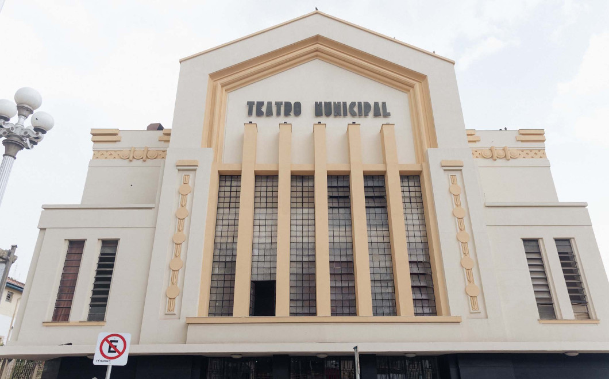

TEATRO MUNICIPAL MANOEL FRANZEN DE LIMA

Casa de espetáculos de grande significado no cenário cultural mineiro. Foi construído na década de 1940 por iniciativa do Prefeito Antônio Manoel Franzen de Lima e inaugurado em 07 de setembro de 1943. O projeto é do italiano Rafaello Berti, em estilo eclético com visíveis características do período art déco. Com três pavimentos, além do palco, um dos maiores de Minas Gerais, há também um foyer com escadas e pisos de mármores preto e branco, quatro camarins, dez instalações sanitárias e uma sala de multimeios, acomodando 695 pessoas confortavelmente. Restaurado nos anos de 2004 e 2020.